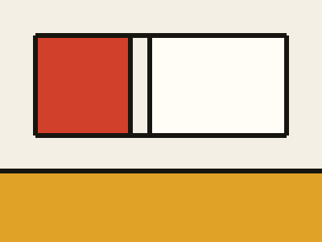

Storie
Tre archi narrativi che riassumono la campagna a un livello più alto delle singole partite. Non sostituiscono il registro: lo interpretano.
3 archi · ordine di creazione
Da leggere per intero
Arco in corso

Atto III · in corso
L'inverno dei corvi
Tre mesi di neve, un tradimento e la fine del mercato sul fiume. L'atto si chiuderà con l'apertura della lettera sigillata.
Aggiornato oggi
Leggi →